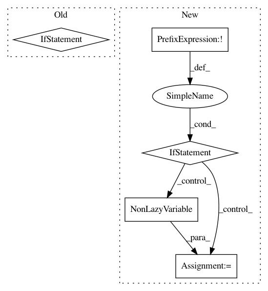

e712d42833a82df3331d1e742ed95b0e7dc235fb,gpytorch/random_variables/gaussian_random_variable.py,GaussianRandomVariable,sample,#GaussianRandomVariable#Any#,49
Before Change
def sample(self, n_samples):
covar_root = self.covar_root()
if covar_root.ndimension() == 3:
base_samples = Variable(self._mean.data.new(covar_root.size(0), covar_root.size(-1), n_samples).normal_())
else:
base_samples = Variable(self._mean.data.new(covar_root.size(-1), n_samples).normal_())
samples = covar_root.matmul(base_samples)
samples = samples + self._mean.unsqueeze(-1)
return samples
After Change
def sample(self, n_samples):
covar = self.covar()
if not isinstance(covar, LazyVariable):
covar = NonLazyVariable(covar)
return covar.zero_mean_mvn_samples(n_samples) + self._mean.unsqueeze(-1)
def var(self):
return self._covar.diag()
In pattern: SUPERPATTERN
Frequency: 3
Non-data size: 5
Instances
Project Name: cornellius-gp/gpytorch
Commit Name: e712d42833a82df3331d1e742ed95b0e7dc235fb
Time: 2018-01-31
Author: gpleiss@gmail.com
File Name: gpytorch/random_variables/gaussian_random_variable.py
Class Name: GaussianRandomVariable
Method Name: sample
Project Name: cornellius-gp/gpytorch
Commit Name: 229456f698c7165b0e206c814ec781004d0c2d0b
Time: 2018-03-14
Author: gpleiss@gmail.com
File Name: gpytorch/mlls/exact_marginal_log_likelihood.py
Class Name: ExactMarginalLogLikelihood
Method Name: forward
Project Name: cornellius-gp/gpytorch
Commit Name: 59d4a8b3bea3b5969f79b45456c8e594b617ce92
Time: 2017-11-13
Author: gpleiss@gmail.com
File Name: gpytorch/lazy/mul_lazy_variable.py
Class Name: MulLazyVariable
Method Name: __init__